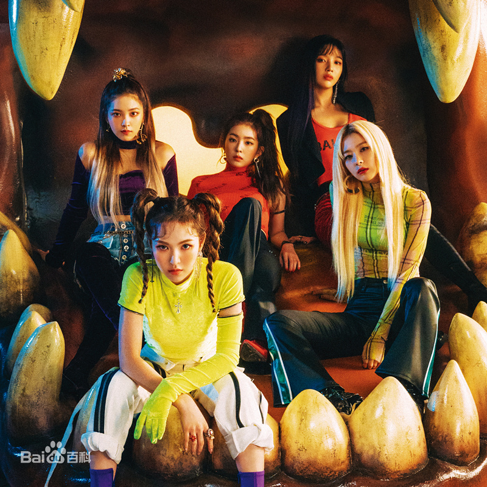

2015年1月中旬，Red Velvet在中国北京举办的”第29届韩国金唱片"颁奖盛典中获得唱片部门新人奖 [37-38] ，
同月在第24届首尔歌谣大赏中获得新人赏 [39] ；3月11日，Red Velvet所属的经纪公司SM娱乐宣布增添Yeri
为组合的新成员，3月14日上午10点，Red Velvet通过官方网页、SMTOWN、YouTube等各大频道公开首张迷你专辑
《Ice Cream Cake》的宣传片与主打曲之一《Automatic》的MV [40] ；3月16日，公开另一主打曲
《Ice Cream Cake》的MV [41] ；3月17日中午，通过Melon、Genie等各大音乐网站公开迷你专辑
《Ice Cream Cake》全部曲目与音源 [42] ；3月18日，正式发行首张迷你专辑《Ice Cream Cake》 [43]
，同日通过NAVER MUSIC的回归首秀《Red Velvet Ice Cream TV》 [44] ；3月20日，参与韩国KBS电视台节目

《音乐银行》录制；3月21日，随SM娱乐公司旗下艺人组合赴中国台湾参与“SMTOWN IN TAIWAN”的演唱会 [45-46]
；3月22日，参与韩国SBS电视台节目《人气歌谣》展开回归活动；3月25日，在首尔三成洞的复合文化空间
“SMTOWN@coexartium”举行迷你专辑的发行纪念活动 [47] ；3月27日，在KBS 2TV频道播出的节目《音乐银行》
中，Red Velvet凭借歌曲《Ice Cream Cake》获得出道后的首个一位 [48] ；4月2日，在韩国Mnet电视频道播
出的音乐榜单节目《M!COUNTDOWN》中，Red Velvet以歌曲《Ice Cream Cake》获得了一位 [49] ；8月7日，
通过Vapp在汉江进行了首次直播节目《五方满足》 [50] ；9月4日，Red Velvet所属经纪公司宣布其于9月9日发
行首张正规专辑《The Red》 [51] ；9月8日，在首尔奥林匹克公园举行首张正规专辑《The Red》发布会 [52]
，翌日0时，公开了首张正式专辑《The Red》的全部音源，专辑主打曲《Dumb Dumb》在包括Melon、Mnet等约7个
音源网站上获得1位；9月10日，登上Mnet电视台音乐节目《M!Countdown》，首次带来主打曲《Dumb Dumb》的舞台
表演 [53] ；12月，参与SM娱乐的2015年冬季单曲计划“WINTER GARDEN”，并公开歌曲《三个愿望（Wish Tree）》
音源 [54-55] 。